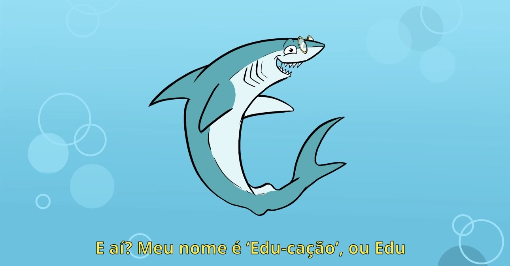
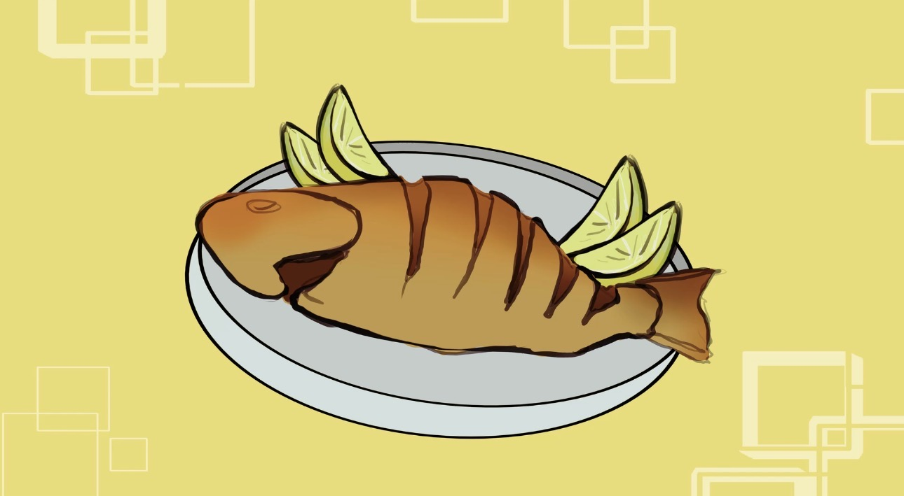

O “Aulão do Edu Cação” é um curta educativo desenvolvido no final de 2025 por estudantes da PUC-Rio, como parte da disciplina Projetar em Sociedade. Criado com o objetivo de promover a conscientização ambiental, o projeto busca informar, de forma acessível, sobre os impactos do consumo da carne de cação e a importância da preservação dos tubarões, em colaboração com a Divers for Sharks.Apesar de ser um termo amplamente utilizado nos ramos de comércio e gastronomia, muitas pessoas ainda desconhecem seu real significado. Uma pesquisa da Sea Shepherd Brasil, divulgada em 2025, aponta que 54% dos brasileiros não sabem que cação é, na verdade, carne de tubarão mesmo sendo um consumo comum, especialmente em regiões costeiras.
Diante desse cenário, o projeto tem como principal objetivo fornecer alternativas sustentáveis que ajudem a reduzir o consumo dessa carne. Além disso, busca informar a população sobre os impactos ambientais decorrentes da captura desses animais e os riscos associados ao seu consumo. A ideia é que o usuário não apenas evite o consumo, mas também se interesse pela causa e passe a adotar alternativas mais saudáveis e sustentáveis.
O declínio populacional dos tubarões tem causado impactos significativos no equilíbrio dos ecossistemas marinhos. Como predadores de topo, eles desempenham um papel fundamental na manutenção da biodiversidade marinha. Sua redução compromete cadeias alimentares inteiras e afeta diretamente a saúde dos oceanos.
Ao fortalecer a educação ambiental e a responsabilidade coletiva, é possível contribuir para a proteção da biodiversidade marinha e para a diminuição da demanda por produtos derivados de espécies ameaçadas.
Desse modo, escolhemos o público infantil. Durante a infância, o cérebro ainda está em desenvolvimento, sendo esse o período em que valores, hábitos e percepções são formados com maior facilidade. Logo, práticas de consumo podem ser repensadas desde cedo. Ao trabalhar esse tema com crianças, o projeto busca não apenas reduzir o consumo atual, mas também evitar a continuidade e a popularização desse hábito no futuro.
Além disso, a forma como a informação chega elas nem sempre é clara. Muitas vezes, há confusão sobre o que realmente é a carne de cação. Por isso, torna-se essencial oferecer conteúdo de qualidade, acessível, adaptado e didático.
O vídeo utiliza uma linguagem acessível e combina ilustrações com imagens reais, facilitando a compreensão e aproximando o público da realidade apresentada.